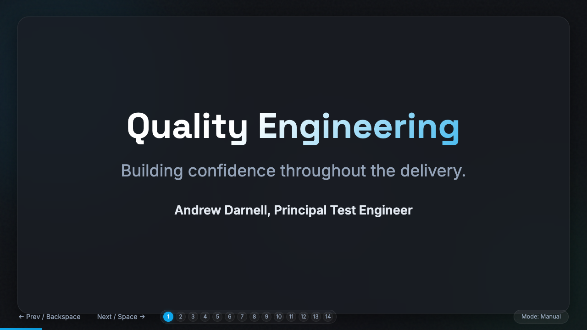
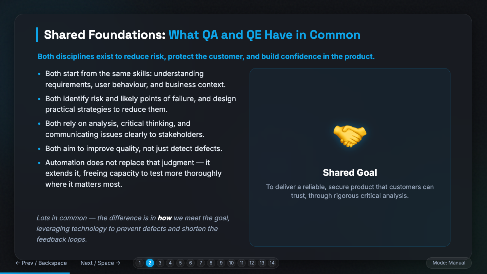
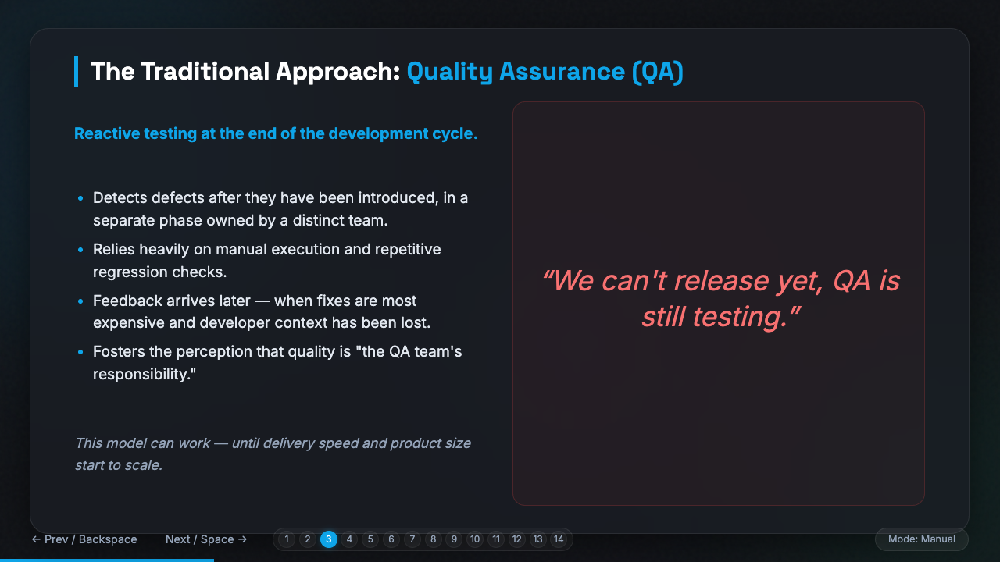
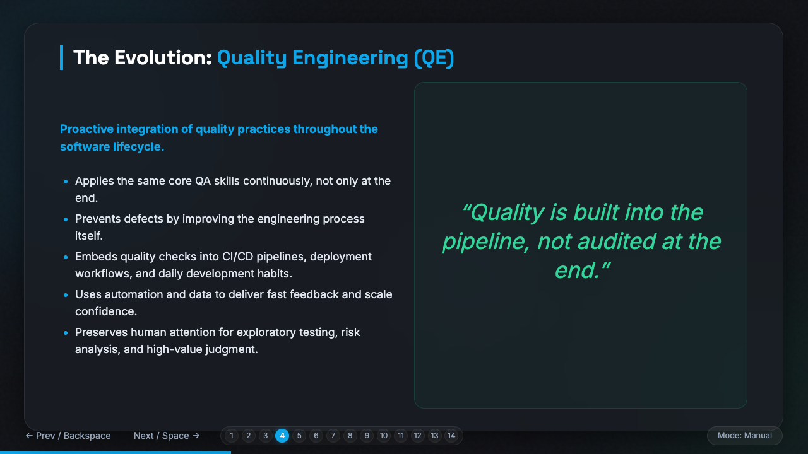
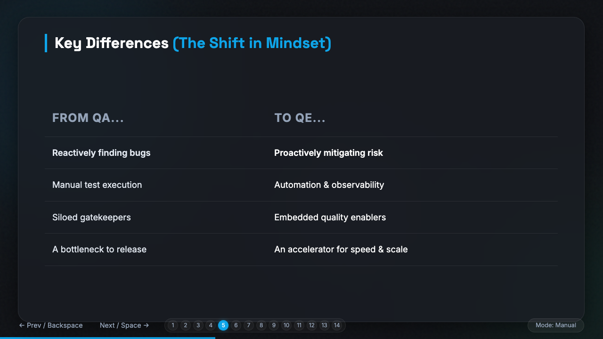
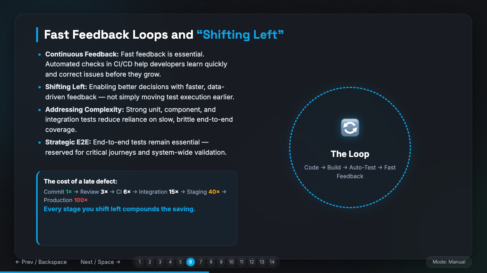
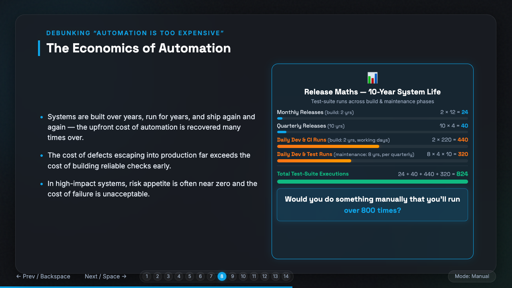
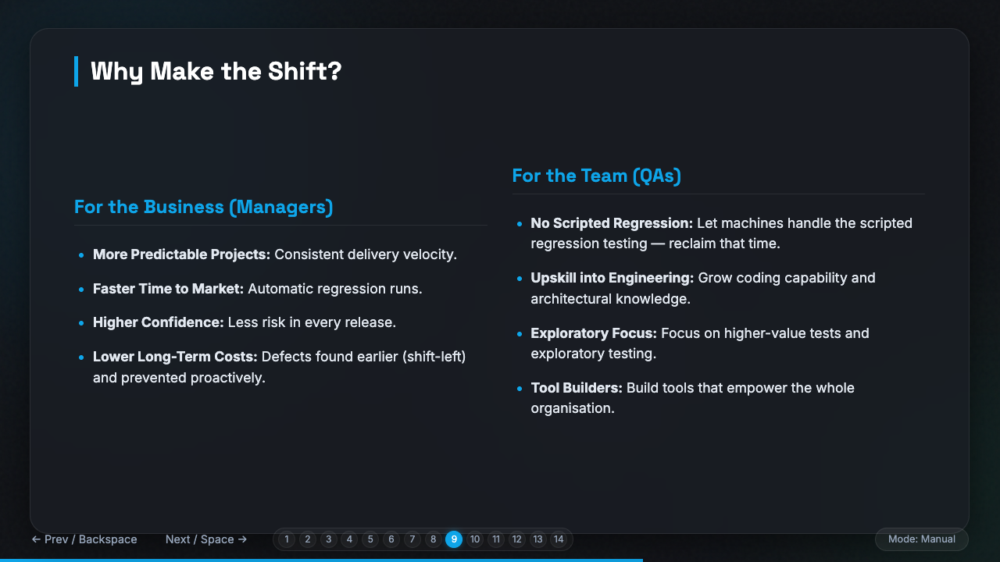

The Full Story · Deck Summary
The whole talk,
at a glance.
All fourteen slides from the Quality Engineering session — from shared foundations, through the automation engine, to your first move. Scan any tile that catches your eye, or start at 01 and follow the arc.

S01
Quality Engineering

S02
Shared Foundations

S03
The Traditional Approach: QA

S04
The Evolution: QE

S05
Key Differences — The Shift in Mindset

S06
Feedback Loops & Shifting Left

S07
The Regression Scaling Problem

S08
The Economics of Automation

S09
Why Make the Shift?

S10
First Line of Defence

S11
Building Tests That Last

S12
Action Plan

S13
Call to Action

S14
Contact
Want the full session?
Join the QE Guild — upskill together and bring us your trickiest automation problem.
Andrew Darnell — Principal Test Engineer